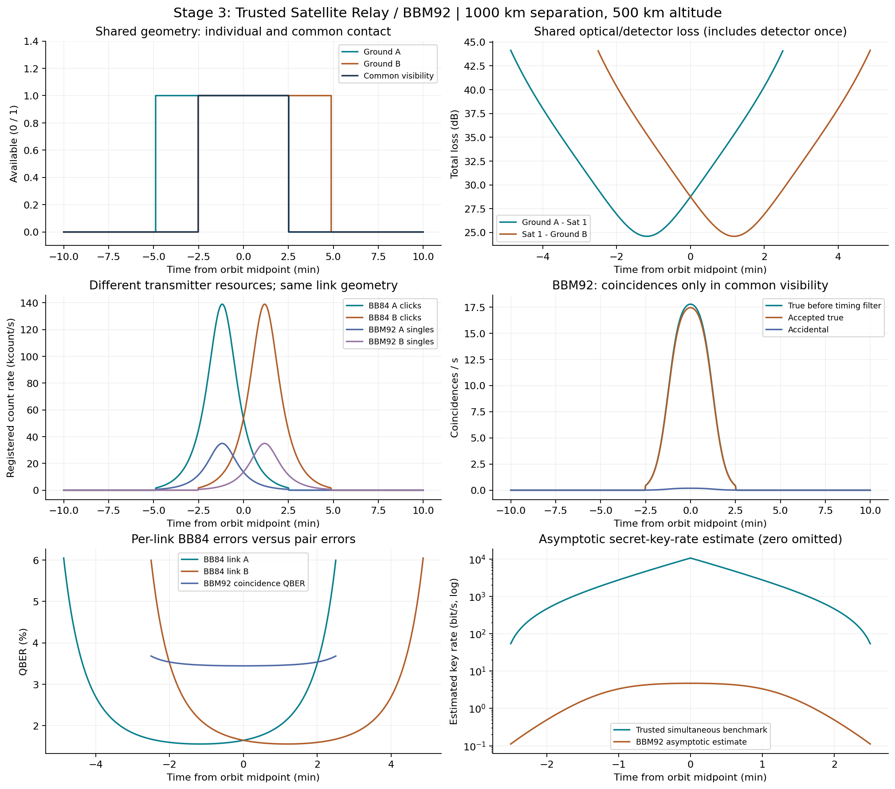
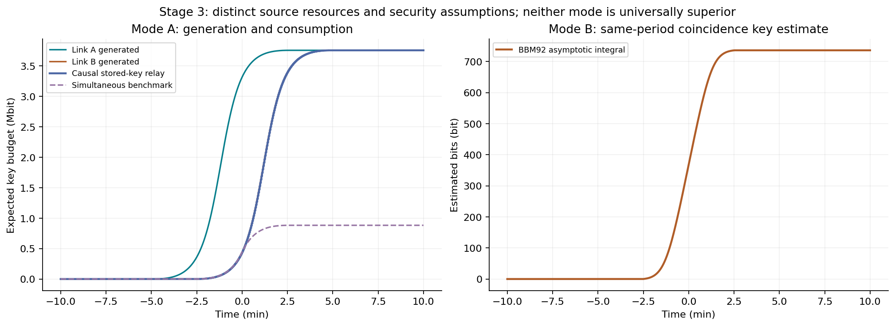

One common circular orbit, atmosphere and optical/detector budget; two separate architectures. Mode A uses 100 MHz weak-coherent-pulse clocks at the default settings, independently per downlink, with signal allocation 0.8 and mean 0.5 photons. Mode B uses a CW pair source (default 10 million pairs/s), one photon to each station. Exact settings are in summary.json; values are simulated expectations.
| Ground separation (km) | 1,000 |
|---|---|
| Common visibility (s, sampled) | 302 |
| BB84 link A generated (bit) | 3,757,513 |
| BB84 link B generated (bit) | 3,757,513 |
| Trusted simultaneous benchmark (bit) | 882,610.7 |
| Trusted causal stored relay delivered (expected bit) | 3,757,513 |
| BBM92 peak true coincidences (/s) | 17.77614 |
| BBM92 peak total coincidences (/s) | 17.62986 |
| BBM92 pooled QBER (fraction) | 0.03458559 |
| BBM92 peak asymptotic key estimate (bit/s) | 4.69888 |
| BBM92 integrated asymptotic estimate (bit) | 735.9869 |
At 4000 km separation with otherwise identical settings: common visibility = 0 s; trusted causal stored delivery = 3,757,513.281 expected bits; BBM92 = 0 estimated bits. No entangled pair is carried between passes.


Mode A: The satellite is trusted and may know the final relayed key. Pools start empty; trapezoid-generated interval amounts become available at the interval end; each delivered bit consumes one bit from each pool. Unlimited demand, classical storage and negligible authenticated relay delay/cost are assumed.
Mode B: The satellite distributes ideal Bell pairs; no satellite key is assigned. The high-loss CW model includes noise/accidentals, Gaussian timing acceptance and independent per-arm misalignment. The BBM92 rate is q C max[1-f h2(Ebit)-h2(Ephase),0], assuming Ephase=Ebit and basis-independent trusted receivers. Both bases must be randomly measured and tested, classical messages authenticated, and the receiver/squashing and adversarial-source assumptions of a security proof satisfied. These requirements are assumed, not established by this numerical model. This is an asymptotic secret-key-rate estimate, not a validated composably secure finite-key rate or a device-independent claim.
Equations: Neumann et al. (2021) (CW coincidences, timing acceptance, BBM92); Ma et al. (2005) (ideal decoy BB84).
Data: comparison.csv. No quantum memory, swapping or repeater model. No wavelength parameter is introduced because divergence, losses and detector efficiency are already independent specified inputs. These source/hardware choices do not establish universal superiority.